About this Guide 가이드 소개
About this Guidep.2
This guide provides all the necessary information to help you understand the expected fit, quality, and construction requirements. The intention of this guide is to communicate key standards. All vendors involved with the development & manufacturing of garments must carefully review this manual and ensure all products are made according to these minimum standards. This list does not include all of our standards; however, it does highlight the most important details.
Quality Snapshot 품질 요약
Target Quality Snapshot – NIT/Kids Apparelp.4
Disclaimer: This page only calls out some of the quality attributes Target expects. Review entire manual or reach out to the Target team with any questions.
Product must comply with Target Children’s Apparel Product Development Guide found on POL.
Must try garments on a live to ensure there are no movement, comfort or modesty issues.
The Target Guest expects our garments to be easy to care, wash before wear and prefer machine wash/ tumble dry. BP to advise at vendor meetings if this is not possible for certain designs.
- Tops/Pants: Fit on Boy Mannequin and Use Boy Grading
- Dresses/Skirts: Fit on Girl Mannequin and Use Girl Grading
BP to advise at vendor meetings if a fabric is testing with shrinkage higher than the standards on POL.
Ensure that shrinkage between all fabrics used in one garment are appropriate and do not cause issues after the Guest washes the garment.
CHECK WITH TEAM
Check for sheerness at front and back of garment. Ensure print show through of panty is not visible or hardly visible when worn. Vendor to check development samples to ensure adequate coverage and that appropriate linings or fabrics have been selected for proper modesty.
Use on interior seam loopers on all knit seams.
Use on all Bottoms at CF Fly and Newborn products
- Necklines – Binding, Back Neck Tape or Lining (no unfinished back necklines or 1” facings that can flip up)
- Sleeveless Garments – must have binding, inside binding, inset with topstitch or lined-NO turn back finish
- Adjustable waistband construction
- Use interior adjustable elastic with clear button
- Follow Target Children’s Apparel Product Development Guide on POL for all Protocols
- Prefer no faux draw cords.
No Plastic Hardware – must be metal based.
Example: XS/S, M/L, XL/XXL
- Tops – Side Seams match, CF match, Sleeves balanced, Collars balanced, CB seam match (if applicable)
- Dresses / Skirt – Side Seams match, Waist or Empire seams match (if applicable)
- Bottoms – CF & CB rises match, Legs balanced
- Tolerance – 0.125"
Prints are not matched or placed. If print forms plaid or stripe pattern, follow requirements listed above.
BP to let TGT know where the controlled area will be either at the shoulder or the sweep. BP should work on group grading options for consistency.
- All pieces of one garment must be cut with the nap running in the same direction.
- Use needle board or “self” fabric press cloth when pressing to avoid damage to nap.
- Must ensure packing & shipping method will not crush or damage nap in any way.
- IS NOT PERMITTED WITHOUT APPROVAL FROM TARGET
- If the BP intends to cut on the cross, follow the following procedure. This must be on an exception basis.
- This also must happen before proto is evaluated as not all requests of this type are approved.
- Make 2 proto samples: 1 will remain unwashed and 1 will be tested.
- Complete wash testing per testing protocol on 1 sample.
- Complete torque testing per testing protocol on the washed sample.
- Send 1 unwashed and 1 washed sample including testing results to Target for approval.
Care Expectations 세탁 · 케어
Generalp.7
All children’s care labels should begin with ‘wash before wear’.
Machine Wash / Tumble Dry
- All garments without embellishments.
- All garments with self-fabric embellishments.
- All mixed fabric garments- It is suggested that vendor to do development testing on all knit/woven mix styles to ensure garment shrinkage and torquing passes testing.
- All garment with art.
BP is responsible for knowing and complying with all federal, state and local regulations.
Contact Target’s approved 3rd party labs to obtain copies of Targets testing protocols.
BP is expected to alert design if they believe a certain garment won’t be Machine Wash / Tumble Dry. Specifically if is dry clean or hand wash/lay flat to dry. Discuss with Merchant/TSS if fabric or trims need to be changed to meet machine wash/tumble dry standards.
- Garments with embellishments.
- Garments with specialty fabrics like fur or laces.
- Garments with specialty art.
- Garments not passing Machine Wash / Tumble Dry.
Target’s Apparel & Accessories Development Manual, Garment Standards and Exception Process are posted on POL.
Specialty Fabric Testing & Carep.8
Our expectation is for our vendors to flag fabric performance and care concerns to TGT PDD/Fabric Standards Team early in the development process to ensure proper testing measures are taken prior to pre-production/PCMS.
Vendor should always review test reports and ensure TGT PDD/Fabric Standards Team is informed of any issues occurring after 3, 5, or 10 launderings (dependent on item category).
All children’s care labels should begin with ‘wash before wear”.
The below requirements will be effective starting C4 2019/C1 2020 (in case of C4 carry forward items).
Contact Target’s approved 3rd party labs to obtain copies of Targets testing protocols.
** shaded items should be tested in garment form to confirm care
| Fabric/Material/Technique | Suggested Care | Delicate Hangtag Callout | Recommendations |
|---|---|---|---|
| All-Over Foil** | Machine Wash Cold, Gentle Cycle, Turn Garment Inside Out, Lay Flat or Hang to Dry | Yes | Must be tested in garment form to ensure seams and edges do not wear off, vendor must also submit appearance of garment after going through production in a factory setting (foil breakdown due to handling); should be tested for 5 to 10 launderings for after-wash appearance. |
| Foil Coatings** | Machine Wash Cold, Gentle Cycle, Turn Garment Inside Out, Lay Flat or Hang to Dry | TBD | Foil applications tend to dull and wash off very easily. Should be tested for 5 to 10 launderings for after-wash appearance. |
| Full Sequin** | Hand Wash, Lay Flat or Hang to Dry | Yes | Should be tested for 5 to 10 launderings for after-wash appearance, as well as longevity of sequins. |
| Mesh/Tule (tutus)** | Machine Wash Cold, Gentle Cycle, Turn Garment Inside Out, Lay Flat or Hang to Dry | Yes | Assess case-by-case on additional embellishment techniques (i.e. foil, glitter, etc.) |
| Hot Melt (glue on applique)** | Machine Wash Cold, Gentle Cycle, Turn Garment Inside Out, Lay Flat or Hang to Dry | TBD | Hot Melt applications may achieve a satisfactory rating at 3 launderings in fabric development testing but may fail in garment form. |
| Glitter Print/Motif** | Machine Wash Cold, Gentle Cycle, Turn Garment Inside Out, Lay Flat or Hang to Dry | TBD | Glitter applications may achieve a satisfactory rating at 3 launderings in fabric development testing but may fail in garment form. |
| Faux Fur/Sherpa | Machine Wash Gentle Cycle, Hang to Dry, Do Not Iron | TBD | |
| Faux Leather/PU | Spot Clean | TBD | |
| Velvet | Machine Wash Gentle/Delicate Cycle, Lay Flat to Dry | TBD | |
| Lace | Hand Wash, Lay Flat or Hang to Dry | TBD | |
| Crochet | Hand Wash, Lay Flat or Hang to Dry | TBD | |
| Swimwear with all-over Foil | Hand Wash, Line Dry | TBD |
Gauzep.9
Garments with Gauze
BP to use designated fabric supplier for gauze products whenever possible. These fabrics meet the care requirement of Machine Wash / Tumble Dry.
If you are unable to use a designated fabric quality/supplier, please contact your design and TSS partner before submitting technical fit samples.
Gauze is designated to have a 5% X 5% garment shrinkage and should be machine wash / tumble dry. 3rd party testing is required by BP to verify the fabric is meeting the standard.
If a GVS fabric quality does not meet the 5% X 5% shrinkage requirement, Target must be notified.
In special situations the fabric may be accepted but a specialty care hangtag must be attached to the garment: “Target cares that our guests have the best experience with our products. Due to the unique nature of this fabric some shrinkage is unavoidable. For best results, please follow care instructions carefully.”
Work with the Target packaging team on approved hangtags.
Fringep.10
Garments with Fringe
- BP to complete “After Wash Appearance” as early in the development process as possible. Avoid asking for exemptions. Work proactively to solve issues and deliver a high quality garment to the Target Guest.
- BP to test multiple care instructions in order to achieve best after wash appearance. Let Target know immediately if wash instructions are not machine wash/tumble dry.
- There is not a standard for fringe breakage.
- Beads have a 4lb standard, Pom-poms have an 8lb standard.
- There is not a standard for fringe breakage. Fringe should be tested to the pom-pom standard (8lbs), however if it fails for 8lbs, but meets at least 4lbs an exception should be requested by the BP.
- BP should advise if normal Floor Ready requirements are not recommended for individual garments. Consider delicate packing for fringe not to arrive wrinkled.
- Tangling during shipping: Since this cannot be tested as it would happen during shipping, BP should advise best packing instructions to prevent tangling.
Faux Furp.11
Garments with Faux Fur
- Should be machine wash/fluff in dryer as needed or machine wash/lay flat to dry or hang to dry.
- BP to complete “After Wash Appearance” as early in the development process as possible. Avoid asking for exemptions. Work proactively to solve issues and deliver a high quality garment to the Target Guest.
- BP to test multiple care instructions in order to achieve best after wash appearance. Let Target know immediately if wash instructions are not machine wash/tumble dry.
- Check care instructions on inspiration samples (likely our care instructions should follow the same).
- BP to advise if normal Floor Ready requirements are not recommended for individual garments.
- Wrinkling during shipping: Tangling during shipping: Since this cannot be tested as it would happen during shipping, BP should advise best packing instructions to prevent wrinkling.
- Must be specified in construction and marked critical. PSQA will check during audits.
- All Naps to be the same direction within 1 garment.
- Long fur naps to be the same direction across all garment sizes.
- Must be called out as “Faux Fur” on labels. Partner with Testing lab for all correct verbiage.
Faux Suede/Leatherp.12
Garments with Faux Suede or Leather
- Should be machine wash/lay flat to dry or spot wash/lay flat to dry.
- BP to complete “After Wash Appearance” as early in the development process as possible. Avoid asking for exemptions. Work proactively to solve issues and deliver a high quality garment to the Target Guest.
- BP to test multiple care instructions in order to achieve best after wash appearance. Let Target know immediately if wash instructions are not machine wash/tumble dry.
- Check care instructions on inspiration samples (likely our care instructions should follow the same).
- BP to advise if normal Floor Ready requirements are not recommended for individual garments.
- Wrinkling during shipping: Tangling during shipping: Since this cannot be tested as it would happen during shipping, BP should advise best packing instructions to prevent wrinkling.
- Nap direction must be specified in construction section of tech pack and marked critical. PSQA will check during audits.
- Nap direction must be the same for the entire garment.
- BP to check that there are no color shading issues if material is a 2 way cut.
- Testing lab will advise.
FAUX SUEDE OR LEATHER
Embellishmentsp.13
Garments with Embellishments (excluding self-fabric)
- If possible, Target prefers that garments with embellishments are machine wash/tumble dry.
- BP to complete “After Wash Appearance” as early in the development process as possible. Avoid asking for exemptions. Work proactively to solve issues and deliver a high quality garment to the Target Guest.
- BP to test multiple care instructions in order to achieve best after wash appearance. Let Target know immediately if wash instructions are not machine wash/tumble dry.
- Check care instructions on inspiration samples (likely our care instructions should follow the same).
- BP to advise if normal Floor Ready requirements are not recommended for individual garments.
- Wrinkling during shipping: Tangling during shipping: Since this cannot be tested as it would happen during shipping, BP should advise best packing instructions to prevent wrinkling.
- For adult, add a soft interlining on the back of the embellished area whenever possible to prevent scratchiness.
- Refer to Target Children’s Apparel Product Development Guide available on POL.
- Testing lab will advise.
Trim Standards 부자재
Threadp.15
| Fabric | Trim | Size |
|---|---|---|
| Knits: jersey, fleece, french terry | TRM-0LW8 Spun Polyester Thread | T30 |
| Knits: jersey, fleece, french terry | TRM-KL21 Textured Polyester Thread | T30 |
| Woven Tops | TRM-0LW8 Spun Polyester Thread | T30 |
| Woven Tops | TRM-1K2E, Polyester Wrapped Polyester Core For Stretch and Wrinkle Resist Fabrics | T30 |
| Woven Bottoms | TRM-0LW8 Spun Polyester Thread | T40 |
Interliningp.16
| Location | Trim |
|---|---|
| Waistbands, Fly, Shirt Collars, Cuff Bands | TRM-XP0W- Thermal Bond NonWoven Fusible Medium (garment-treated TA000000617099, Fusible) |
| Waistbands, Fly, Shirt Collars, Cuff Bands | TRM-545M- Thermal Bond NonWoven Fusible Medium (non-garment treated TA000000617099, Fusible) |
| Waistbands, Fly, Shirt Collars, Cuff Bands | TRM-6634- Thermal Bond NonWoven Fusible Soft Medium (garment treated TA000000617099, Fusible) |
| Knee Reinforcements | TRM-YKR4- Knee Reinforcement Fusible (non denim) Designated supplier Freudenberg – ME8043 |
| Woven Tops, Dresses | TRM-830W- Thermal Bond NonWoven Fusible Soft Light (garment-treated TA000000623198) |
| Woven Tops, Dresses | TRM-9XZL- Thermal Bond NonWoven Fusible Soft Light (non-garment treated TA000000623198) |
| Over the back of appliques, embroidery and rosettes | TRM-L202- Over The Back Embroidery Soft Medium TA000000617023 for non-garment-treated, Fusible |
| Over the back of appliques, embroidery and rosettes | TRM-87RL- Over The Back Embroidery Soft Medium TA000000617023 for garment-treated, Fusible |
| Embroidery Cut Away | TRM-6604-Cut Away Interlining, Non-fusible, NonWoven Sew In Full Light for non-garment treated TA000000616993 |
| Embroidery Tear Away | RM-KXLL-Tear Away Interlining, Non-fusible, NonWoven Sew In Full Light for garment-treated and non-garment treated TA000000616993 |
Elasticsp.17
| Garment Type or Location | Trim |
|---|---|
| Knit Garments | TRM-K117 STANDARDIZED TD Insert Elastic 34g for medium weight knit |
| Knit & Woven Garments | TRM-JK8Y STANDARDIZED TD Insert Elastic 37g light weight to medium weight knit |
| Woven Garments | TRM-0PP9 STANDARDIZED TD Insert Double Thread 37 Gauge Elastic Med Weight |
| Garments with Adjustable Waistbands | TRM-96LR STANDARDIZED TD Button Hole Elastic 26g, Knit |
| Flexible Drawstring Construction | TRM-L88G STANDARDIZED TD Braided Elastic 37G, Knit |
| Knit Garment Shoulder Seams, Shirring | TRM-N0XN STANDARDIZED TD clear Polyurethane Tape Elastic, Clear |
| Smocking Details | TRM-874L Elastic Thread, Elastic |
| Keyhole Closures | TRM-J99G TD Tubular Elastic Loop for Button Closure |
Buttons & Zippersp.18
| Button | Trim |
|---|---|
| Non-Denim Adjustable Waist | TRM-P60L Clear waistband inner button 4 hole (TNB16_11A02) - for non-de |
| Denim Adjustable Waist | TRM-1KRY Standardized Domed Chalk button 4 hole |
| Button Keyhole Closure (if button type is not noted in packet) | TRM-G9RW Standardized Faux pearl no rim, 4 hole |
| Zipper | Trim |
|---|---|
| Molded Plastic | TRM-L2LK STANDARDIZED Molded Plastic Closed End Auto Locking Zipper, Molded Plastic |
| Molded Plastic- rectangular zipper pull | TRM-YKGR STANDARDIZED Separating Auto Locking, Molded Plastic – rectangular zipper pull |
| Molded Plastic- rounded zipper pull | TRM-XP55 STANDARDIZED Separating Auto Locking, Molded Plastic – rounded zipper pull |
| Separating Auto Lock Coil | TRM-YKXR STANDARDIZED Separating Auto Locking Coil Zipper, Coil |
| Closed End Auto Lock Coil | TRM-KX64 STANDARDIZED Closed End Auto Locking Coil Zipper, Coil |
| Antique Silver, Metal Closed End Auto Lock Coil | TRM-WXZX TNB YKK #4.5 Metal Closed End Semi Auto Locking TA000000511477Metal0.00Antique Brass |
| Antique Brass, Metal Closed End Auto Lock Coil | TRM-WXZX TNB YKK #4.5 Metal Closed End Semi Auto Locking Antique Silver TA000000511477Metal0.00 |
Construction Standards 봉제 기준
All products must comply with Target Children’s Apparel Product Development Guide available on POL.
Buttonsp.20
- Button – 2 or 4-hole, with 304 LOCKSTITCH. If 4-hole, “X” stitched required.
- Button – Thread shank must be appropriate for thickness of fabric.
- Button – Must pass RSL (Restricted Substance List).
- Buttons – Evenly spaced buttons.
Buttonholesp.20
- Stitching to be dense enough to cover base fabric and must not fray.
- Gimp thread required on keyhole and fishtail buttonholes.
Clean Finishp.20
- Necklines – Binding, Back Neck Tape or Lining (no unfinished back necklines or 1” facings that can flip up).
- Sleeveless Garments – must have binding, inside binding, inset with topstitch or lined-NO turn back finish.
- Stitch down seam allowance (inset necklines, piecing at sleeves, sleeveless inset, raw edges).
- Knit & Woven Stretch Bottom (Skinny) Hem – 401 chain stitch.
- Knit & Woven Stretch Bottom Openings – Must have textured thread at bobbin/looper.
- Vents/Slits – Must be clean finished.
Consistency in Construction for Knitsp.20
- SPORTSWEAR – 0.625” hem with 1/8” stitch gauge, exceptions maybe granted based on styling.
- SLEEPWEAR – 0.625” hem with 1/4” stitch gauge; exceptions maybe granted based on styling.
- Thread – Spun polyester for needle and textured polyester for bobbin/looper.
- Knit hems and necklines should have chain or cover stitch for best stretch.
- Vents/Slits – Must be clean finished.
Crotch Snap Placketp.20
T21258, TNB19_18A01, TNB Metal Prong Ring Snap, Snap, YKK Prong Snap for Rompers
Cutting Requirementsp.20
Naps – Cut ALL ONE DIRECTION within individual garment.
Functional Drawstringp.21
- All drawstrings in NIT & Kids to be Flexible Drawstring construction – unless otherwise indicated by TD.
- Drawstring – must be securely tacked to waistband at center back. Tacking must be centered over the entire width of drawstring with either a Vertical Bar tack or Vertical Lockstitch tacked minimum of 2-3 times and securely back stitched at each end.
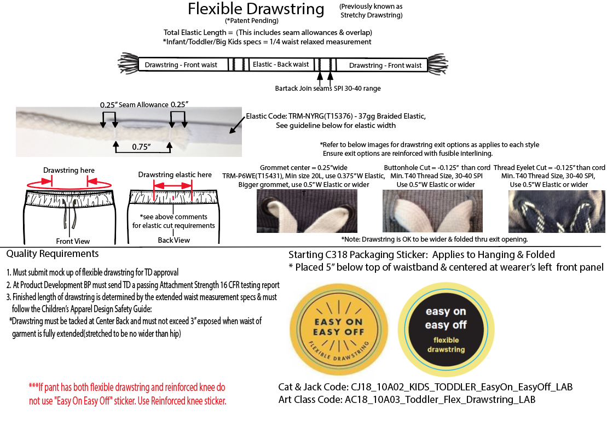
Drawstringp.22
- Drawstring – Waist, sewn to garment at mid-point.
- Drawstring – Waist, fully extended, not to extend 3” beyond garment.
- Bottoms – All drawstrings must be functional unless otherwise noted or garment styling indicates otherwise.
Expression of Fitp.22
Vendor must fit garments over appropriate layering pieces.
Hemsp.22
Whenever styling allows, sleeves and sweep/hems should be set circular.
Hoodiesp.22
- Lined hood or add back neck tape for clean finish.
- Back neck taping finished under zipper binding.
- Lining or 0.25” binding to clean finish zipper tape edges.
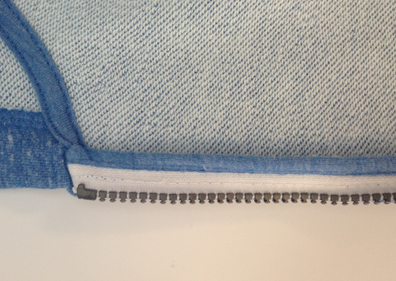
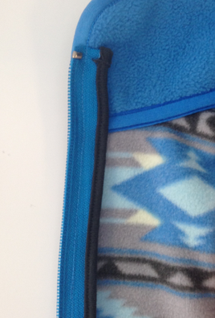
Interior Constructionp.22
- All jackets with linings – 1.5” total ease pleat at center back neck.
- Facing – Self-facing from shoulder to bottom hem.
- Facing – Requires under-stitching (at 1/16”) to prevent rolling.
- Interlining – If requested interlining fails testing or is unacceptable, vendor should submit a passing report with 2 options for TD to choose.
- Interlining – Required as a backing for any scratchy embroidered item.
- Interlining – Over the back, cut inside fusible interlining size no more than 0.375” larger than finished artwork size. When not attached at seams, cut with rounded corners.
Liningsp.23
- Lining – Sleeve and Bottom Hem: 1.5” turn back, 0.5” bagged lining, tack hems at seam allowances.
- Lining – Swing tacked to side seams with thread chains.
- Lining – 1” shorter than shell fabric.
Locker Loopp.23
All jackets must have locker loop at center back neck. Must not exceed 2.5” total length.
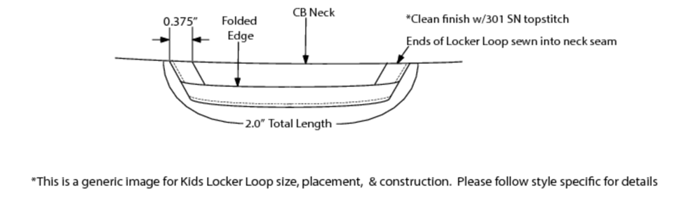
Matching Plaid, Stripes and Prints that look like the should be matchedp.23
- Tops – Side Seams match, CF match, Sleeves balanced, Collars balanced, CB seam match (if applicable).
- Dresses / Skirt – Side Seams match, Waist or Empire seams match (if applicable).
- Bottoms – CF & CB rises match, Legs balanced.
- Tolerance – 0.125"
Placketsp.23
Wovens – Separate sewn-on placket is preferred.
Pocketsp.23
Lined pocket facings must extend 1” or more beyond opening.
Reinforcementp.23
- Clear Elastic Tape – Use in all Knit tops with set-in sleeves (short and long) at shoulder seams.
- Clear Elastic Tape – Use inside bindings of strappy tops/dresses.
- If there are concerns of patch pocket not meeting pull test, use 1” self-fabric circle for reinforcement inside garment behind pocket corners.
Shirringp.24
Fullness to be evenly distributed.
Trims: O-Rings & Slidersp.24
- Must always be enamel coated metal. Plastic is prohibited.
- Must pass RSL (Restricted Substance List).
Trims: Snaps vs Tacksp.24
- BB: 27L Snaps (sizes XS-S or 4-7); 27L Tacks (sizes M-XXL or 8-18 and Husky sizes M-XXL or 10-18).
- BG CJ: 27L Snaps (sizes XS 4- 18 XXL);
- BG AC: 27L Snaps (sizes XS 4- 7S); 27L Tacks (sizes M-XXL or 8-18).
- BB & BG: Snaps must have a faux buttonhole underneath to create the look of a tack.
Threadp.24
- Polyester Thread – Most garments, vendor to choose appropriate Tex size and SPI.
- Cotton Wrapped Polyester Core – Washed garments which require DTM color. 100% cotton is strongly discouraged.
- Polyester Textured Thread – Bobbin/loopers for all knits.
- Basting stitched for welt pockets – see Shipping Requirements.
- Bar tack – Minimum of 5 of 6 stitches.
- Overlap of Circular Stitching – Minimum of 5 to 6 stitches.
Shipping Requirementsp.24
- Welt Pockets – Add 1” baste stitch to center of pockets. Thread size should be T-18. SPI should be 4-6. Color should be red or contrast. Thread cannot show on topside of garment.
- Vents – Discuss with TD whether they should be shipped with tack or no tack.
- Pressing – Depends on styling; discuss with TDs when hard pressing will be utilized for approval. Generally, all rolls should not be hard pressed.
Wash for Softnessp.24
- Softness is an important Target attribute. Please reach out to Target with questions.
- BB: All boys tops and bottoms must have a wash for softness. Discuss with team about any costing concerns.
- BG: All fabrics must be soft. Add softener or wash when needed to and when style permits.
Knee Interlining Reinforcementp.26
- Interlining Trim Code: TRM-YKR4 (T21318) Knee Reinforcement
- Fusible: Freudenberg #ME8043E
- Use white interlining for light garment colors, black for dark garment colors.
- Attach interlining before wash.
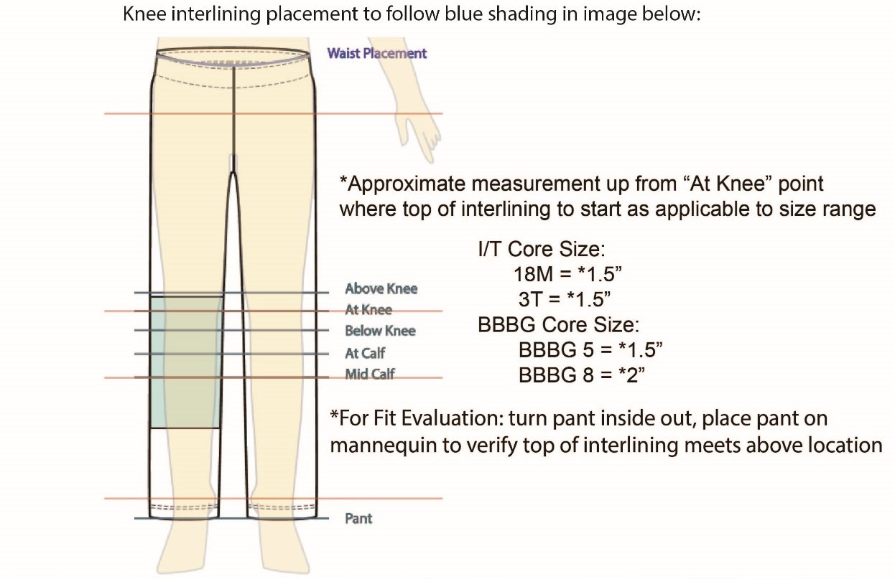
Packaging Stickersp.26
- Applies to Hanging & Folded.
- * Placed 5” below top of waistband & centered at wearer’s left front panel.
- Placement is for regular and extended sizes.
- This sketch is for dimensions only. Refer to garment sketch for styling.
- Vendor to ensure all required testing for reinforced knee is completed according to Target standards.
- *Vendor to grade.
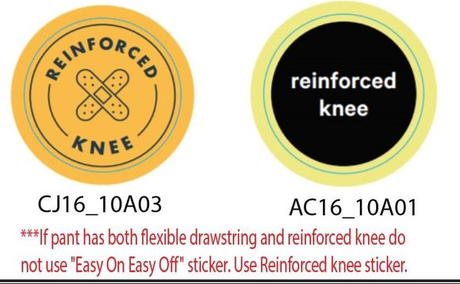
Length of Interliningp.26
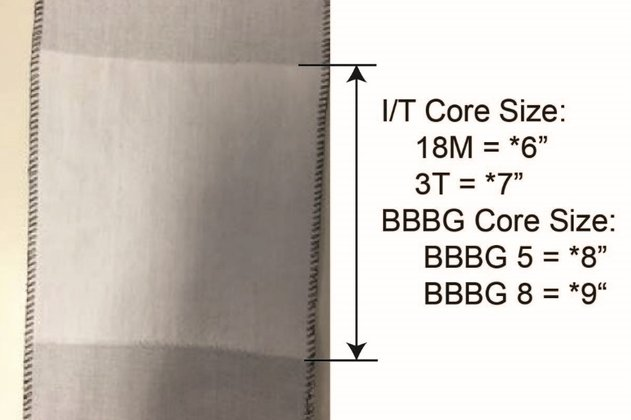
Special Shipping Instructions 출하 · 포장
Double Sleeve Roll — Art Classp.28
Shipping: Double Sleeve Roll-Preferred Method BB & BG
Preferred sleeve roll method for long sleeve tops, when double sleeve roll is requested (check with TD for each style, if unsure).
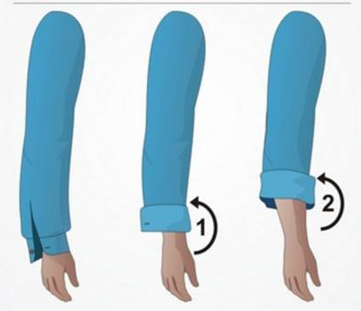
BB In-Store Hanging Program — Art Classp.29
BB In-Store Hanging Program Presentation Cheat Sheet — 스타일별 출하 상태
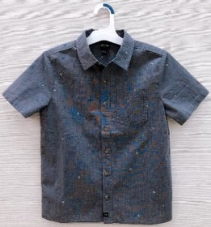
Short & Long Sleeve:
Neck:
Ship w/ 1st button open
Long Sleeves:
Rolled 2x
2.25” roll height for Size M
Attach hangtag at seam allowance of sleeve inseam
OK not to fold sleeves for Target.com orders
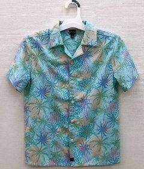
Ship w/ all buttons closed
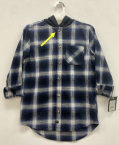
Neck:
Ship w/ all buttons closed
Sleeves:
Rolled 2x
2.25” roll height for Size M
Attach hangtag at seam allowance of sleeve inseam
OK not to fold sleeves for Target.com orders
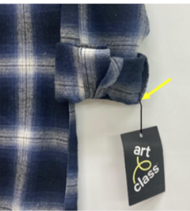
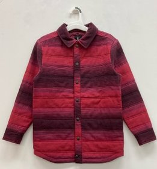
Neck:
Ship w/ 1st button/snap opened
Sleeves:
Ship with sleeves not rolled and cuffs fully clasped
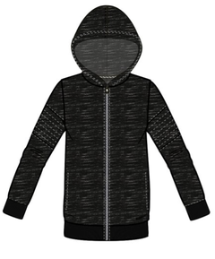
Ship with zipper fully closed
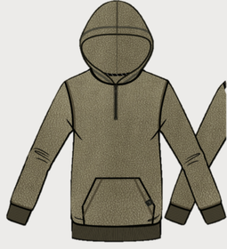
Ship with zipper fully closed
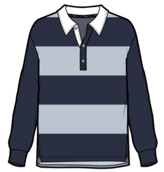
Neck:
Ship w/ 1st button/snap opened
Sleeves:
Ship with sleeves not rolled
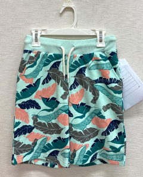
Ship w/ drawstring untied
Woven Shirts — Cat & Jackp.30
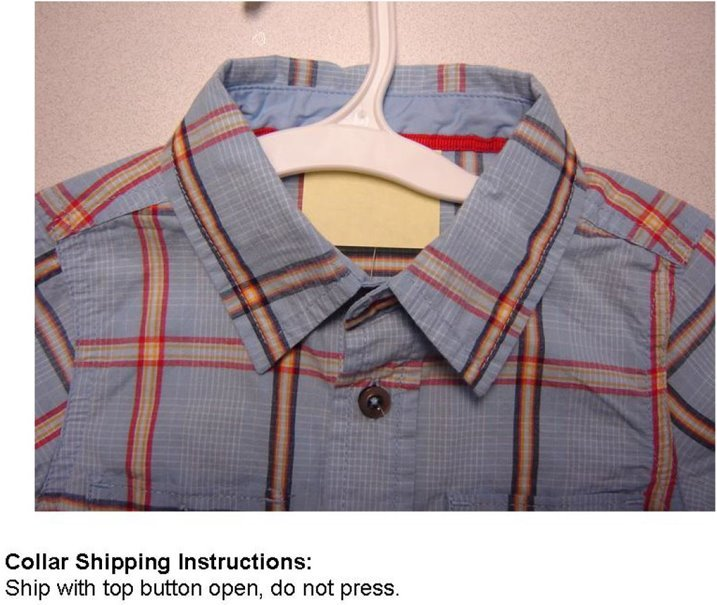
Update History 개정 이력
Summary of Updatesp.31
| Date of update | Brand/Dept/Category/Pages | Update to Guide and/or Reason of Change |
|---|---|---|
| 2.16.24 | Kids Quality Snapshot Grid (page 4) | Added adjustable WB construction for fixed waist |
| 10/30/24 | All Kids Interlining page 16 | Added Embroidery Tear Away and Embroidery Cut Away options |
| 6/9/25 | Trims: Tacks vs Snaps (pg 24) | Updated CJ BG to snaps only and AC BG to snaps & tacks |
| 6/9/25 | All | Updated to specify NIT/Kids Apparel |
| 6/9/25 | Qualityy Snapshot (page 4) | Added Newborn to YKK Zippers |
| 6/9/25 | Trims: Elastic (page 17) | Updated elastic trim codes |